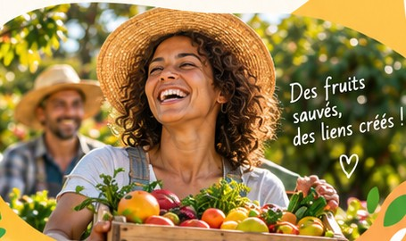

L'équipe et le terrain
Nous travaillons main dans la main avec les producteurs locaux, artisans transformateurs, associations et bénévoles engagés.
Rencontrer nos partenaires →Nous donnons une seconde vie aux fruits et légumes invendus à La Réunion, en soutenant les producteurs locaux, en réduisant le gaspillage et en rendant les produits locaux accessibles à tous.
Découvrir notre mission →
Lutter contre le gaspillage alimentaire en donnant une seconde vie aux fruits et légumes invendus et en soutenant une alimentation plus accessible et plus durable.
Le projet est né d'une rencontre entre producteurs engagés, citoyens convaincus et gourmands solidaires. Face au gaspillage, nous avons décidé d'agir ensemble.
de fruits et légumes sauvés chaque année.
partenaires engagés.
ateliers et actions organisés.
sourires partagés.
Nous travaillons main dans la main avec les producteurs locaux, artisans transformateurs, associations et bénévoles engagés.
Rencontrer nos partenaires →